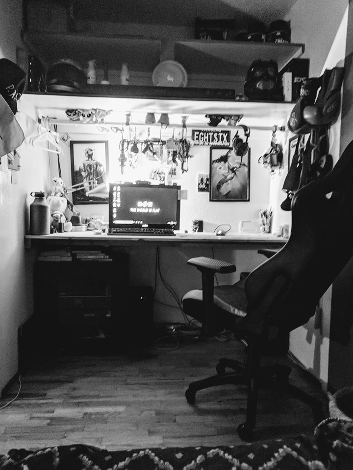
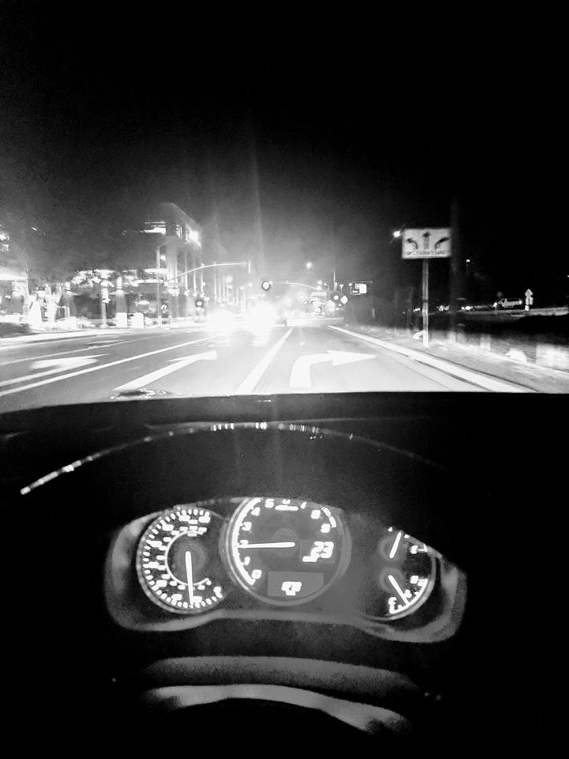
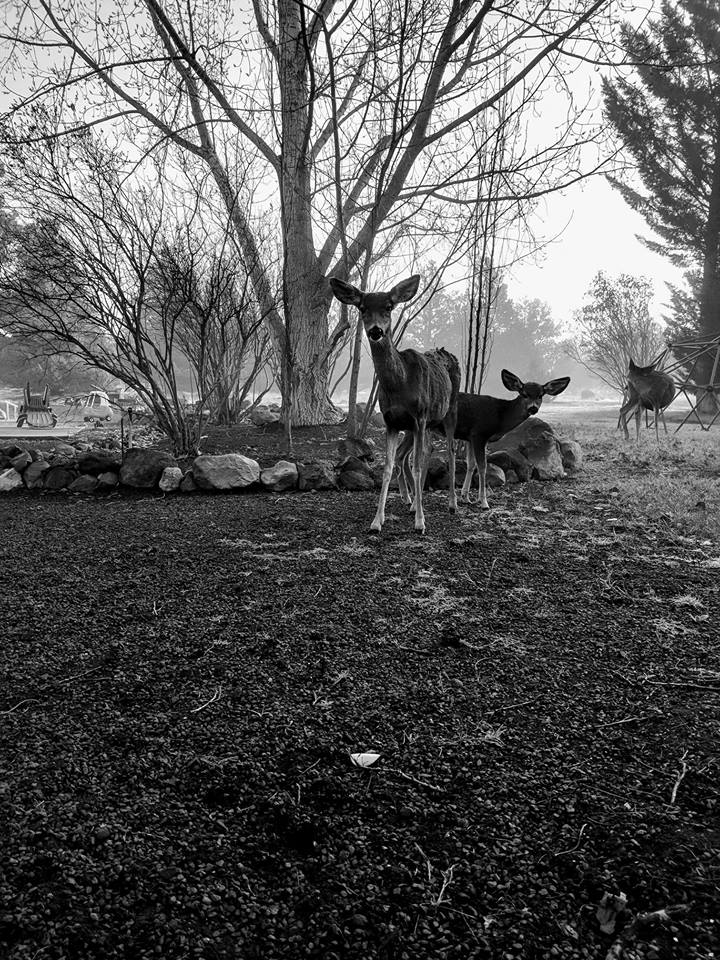

I love computers, growing up as a kid i spent alot of time around one of my more tech-savy uncles. I'd watch him build and take apart computers all the time. Which caused me to have a great curiousity about how every single aspect of them work from the hardware to the coding that went into making them work.
Driving around and traveling are two of my greater passion. Although I haven't even ventured that far outside California even taking the scenic route on the way home is something I absolutely love to do. I hope that with the skills I gain from this course it will open the door for me to purse these passsions even further.
Nature, what alot of people that in this profession would find the be their mortal enemy, I can't get enough of. The fresh crisp, the dew drops on the grass early in the morning it's amazing. It's a great way to unwind after a stressful week of work and helps me apply myself further when I have to go back to reality.
